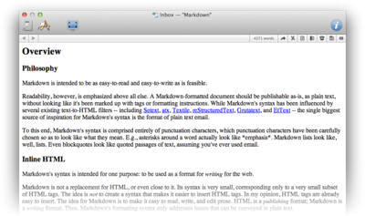

|

Markdown is a simple formatting language invented by John Gruber. It lets you write articles with very simple formatting, e.g. headlines, lists, quotes, links, and emphasis in a very natural way using a plain text editor and render it to visually pleasing HTML. Write Markdown-formatted text using DEVONthink Pro Office's Markdown view and switch easily between a plain text editor and the rendered view using
View > Text/Best Alternative
or the  and and  icons in the navigation bar. icons in the navigation bar.
Learn more about Markdown and its syntax on Gruber's Markdown pages.
Toolbar & shortcuts
The document windows toolbar is very similar to the one in DEVONthink Pro Office main windows, yet can be configured separately.
Please find a list of shortcuts in the appendix. Read more...
Contextual menu
In text mode the contextual menu commands are similar to those of plain text documents. In rendered mode the following commands are available:
-
Add Link to Downloads: Adds a link to the Download Manager panel.
-
Add tag [word]: Tags the document with the selected word (only available if the word is not already a tag of the document).
-
Copy Link: Copies a link to the Clipboard (only available for selected links).
-
Look Up [word]: Looks the selected text up in Mac OS X's Dictionary.
-
Open Link in Browser: Opens the selected link in the default browser or application (only available for a selected link).
-
Open Link in New Tab: Opens the selected link in a new tab.
-
Search with Google: Opens your default browser and searches for the selected text in Google.
-
See [word]: Opens a drawer with documents related to the selected word.
-
See Related Text: Opens a drawer with documents related to the selected text passage (only available when more than one word is selected).
-
Set Name As: Renames the document according to the selected piece of text (needs to be less than 256 characters).
|